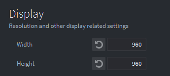
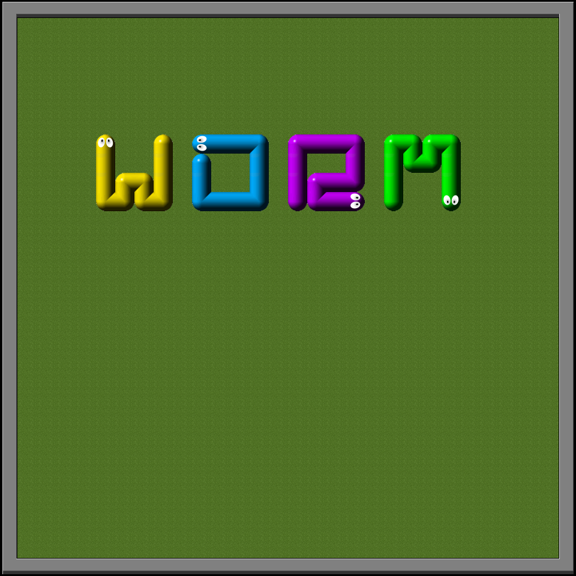
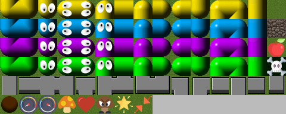
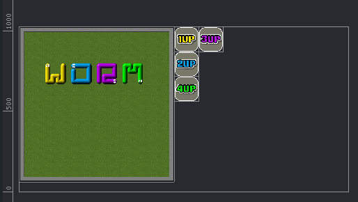

Tutorials for 2D games projects
Worm | Changing the game properties and creating the atlas.
The game can be played by up to four players simultaneously. For that reason we are going to make the playing area a square shape so that all the worms have an equal starting point at the four corners of the square.
- In the assets panel, double click, 'game.project'. This is where all the generic settings for the game are stored.
- Scroll down until you find, 'Display'. Change the width and height to be 960 x 960.

Before we create the interface we will need some graphics to use for the buttons and title.
- In the assets panel, right click 'main' and select, 'New...', 'Atlas'.
- Name the atlas, 'graphics' and click, 'Create Atlas'.
- Download the graphics you need for the game by right clicking this zip file and saving the linked file: graphics.zip
The file contains these assets:
| 1up.png | 2up.png | 3up.png | 4up.png |
| title.png | |||
 |
|||
| spritesheet.png | |||
 |
|||
- Unzip the graphics.zip file and move the graphics folder into the folder where you have saved your project. If you copied the files out of the zip file you will need to make sure you have a top level, 'graphics' folder.
- In the outline panel of graphics.atlas, right click, 'Atlas' and select, 'Add Images...'
- Select all the images except for spritesheet.png (that needs to be added to a Tile Source later) and click OK. You can select multiple items by holding CTRL.
Remember you can zoom out by pressing F to see the assets:

- Save the changes by pressing CTRL-S or 'File', 'Save All'.
We are now ready to build the interface for the title screen. Stage 2b >
 Craig'n'Dave | Version 1.3
Craig'n'Dave | Version 1.3